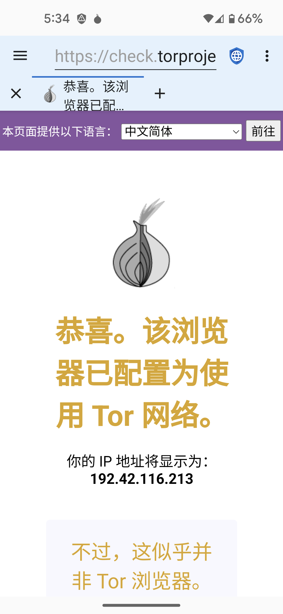

想要侵犯网页的隐私的通常分为两种。一种是通过访问IPS(互联网提供商)的政府，一种是经营社交和广告的大型公司。像TOR浏览器和I2P在防止政府(监视网络传输)获得隐私是有用的，但是阻止大型公司(通过在网页中嵌入恶意代码)不是很有作用。
恶意政府经常监视其公民以惩罚持不同政见者或人权活动。他们通常要么运营本地 ISP，要么强制他们披露显示每个用户访问的每个 IP 地址的信息。 分层代理旨在通过加密来自用户设备的流量并在将其发送到最终目的地之前通过 Internet 上的多个服务器路由它来阻止这种对隐私的侵犯。这意味着任何 ISP、 服务器或网站都无法知道用户设备的IP地址以及最终 Web 服务器的 IP 地址。恶意政府及其控制的 ISP 无法判断用户正在访问哪些 Web 服务器，尽管他们可以判断用户正在使用分层代理服务。 在世界的某些地方，使用代理可以被解释为非法行为的证据（“如果你没有什么可隐藏的，你就不会加密你的流量”）并且用户可能会受到惩罚，因为政府认为他们正在做被禁止的东西。因此，代理可能会有帮助，但它们不是灵丹妙药。
当用户连接到 Web 服务器时，Web 服务器可以看到用户的 IP 地址。虽然这不是一门完美的科学，但 IP 地址可以相当准确地转换为物理地址。 小型 Web 服务器通常依靠 IP 地址来识别访问其站点的用户的位置。代理是一个很好的解决方案，可以从这些服务器中隐藏用户的位置。但拥有社交媒体和广告网络的大型企业使用旨在跨设备和 IP 地址跟踪用户的完整信息配置文件。 这些配置文件采用多种技术来识别用户，包括 JavaScript、cookie、跟踪 ID 和浏览器指纹识别。 由于互联网上的绝大多数网站要么从主要网络之一加载广告，要么将社交媒体图标与相关的 JavaScript 嵌入在一起，因此这些公司已经为几乎每个在线用户建立了个人资料，并且可以跟踪他们在不相关网站上的互联网活动。
他们跟踪访问过的每个站点、购买的所有物品、用于购买的每张信用卡、物品运送到的每个地址以及上传到互联网的每张图片的 GPS 元数据。 他们建立了用户的年龄、性别、婚姻状况、地址、政治派别、宗教派别、家庭情况、宠物数量以及他们可以得到的所有其他信息的档案。他们甚至购买当地商店的信用卡交易数据库，这样他们就可以在他们的个人资料中跟踪用户的离线购买模式。 因为他们已经拥有比 IP 地址公开的更准确的用户地址信息，所以代理无法提供针对大型公司的真正隐私保护。
针对大公司的最佳隐私保护措施是在禁用 JavaScript 的情况下浏览网页，然后阻止广告网络、禁用 cookie 和 DOM 存储，并使用难以识别指纹的浏览器。
尽管代理有限制，但是他们在某些方面还是很有用。 Tor and I2P有安卓应用，可以轻松的使用他们代理网络， 在隐私浏览器中打开代理，新中考会变成蓝色，而不是默认的灰色。因为使用了多层的节点，所以访问速度会比直连慢很多。
